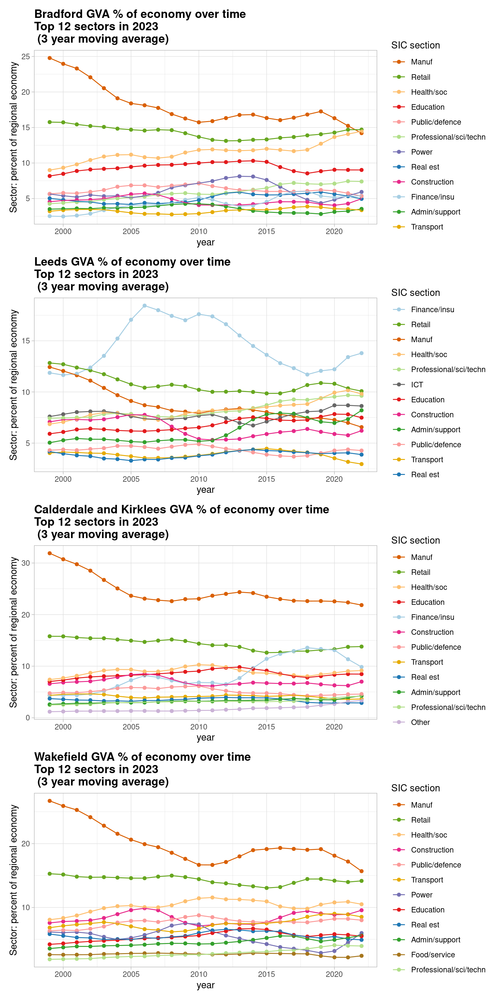
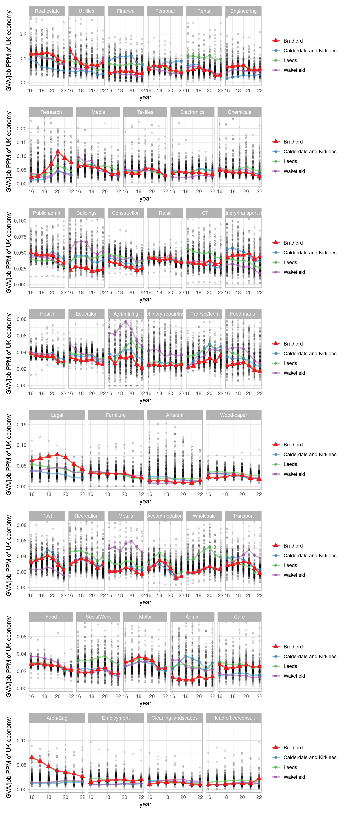
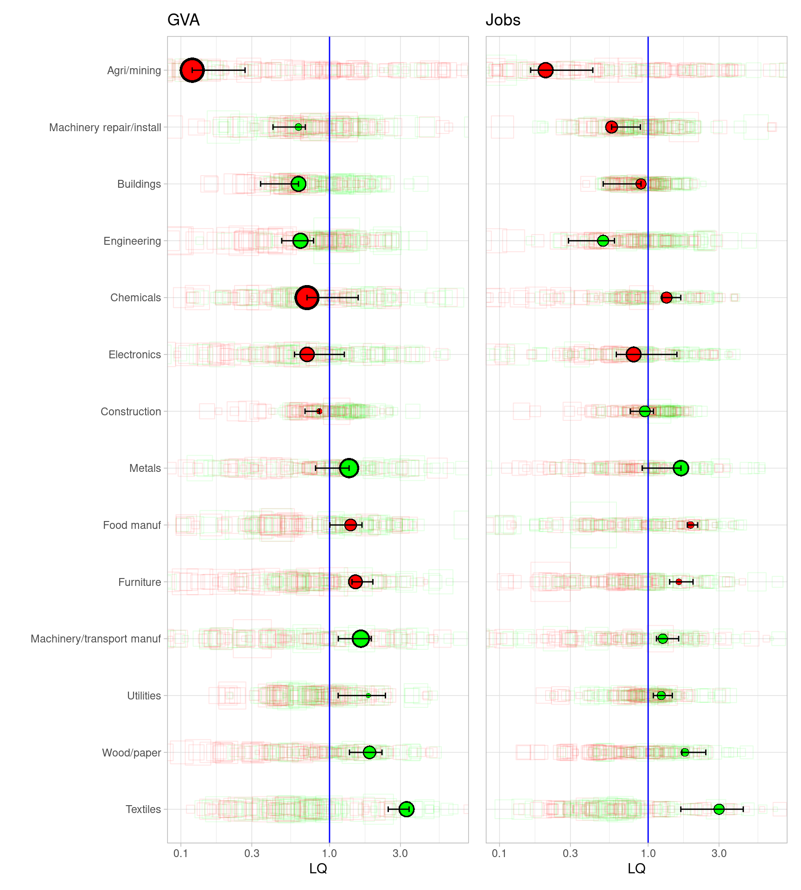
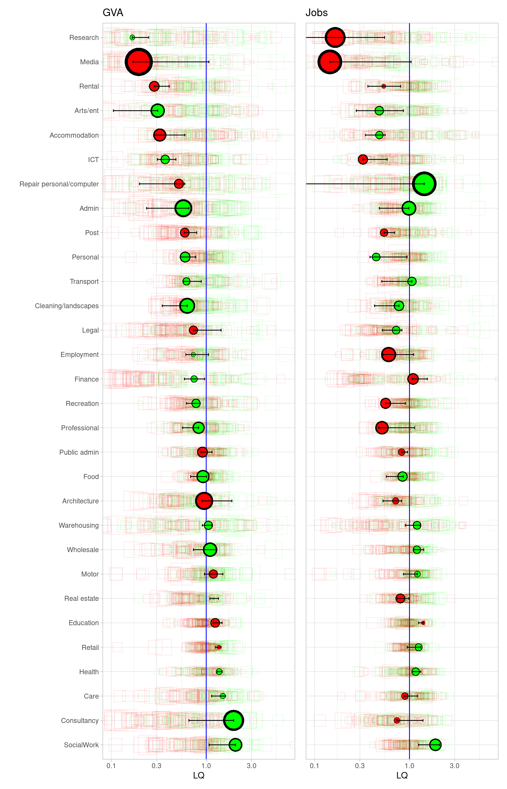

Bradford sectors and clusters: past, present
Structural broad sectorGVA sector change
GVA V JOBS

Location quotients for output and jobs: most recent and change over time
Production sectors

Rest of sectors

AV. PERCENT CHANGE OVER TIME FOR GVA VS HOURS WORKED, ITL3 ZONES
Hover for place names.
- West Yorkshire ITL3s in green (95% CIs)
- Core cities in blue (95% CIs)
- London ITL3s in red/pink
And:
- Anything above/left of diagonal line is a productivity increase.